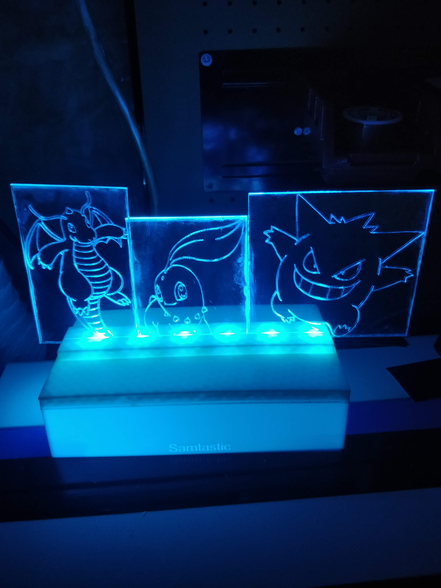
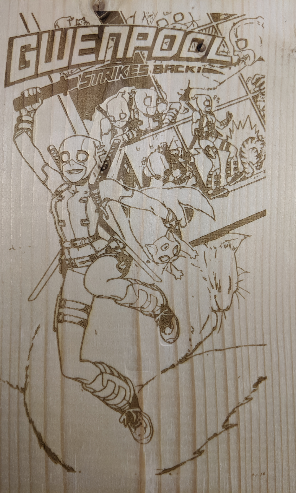

I've always been very interested in figuring out how things worked and from a young age I was taking apart computers as well as other electronics (sometimes to my parent's dismay as I would accidentally break them.). This ultimatly paid off as I became very comfortable around electronics which lead me down that path in college and it was there that I was introduced to the world of CNC machinery as well as 3D printers(Which I would clump into the same category as CNC machines but some people like to split hairs on that.). From there I would go on to buying my instructor's 3D printer, this machine would interest me so much that I would go on to building my own custom CNC wood engraver as my final project before graduating from college.
Although this began as a very hobbiest level of playing around with these machines I did find myself overtime growing more comfortable with them as I taught myself how to 3D model my own designs as well as further understanding G-Code. While doing this I found myself wanting to explore more into the world of CNC engraving and more specifically laser engraving. Ultimatly that dream became a reality as I bought my own 40W laser engraver.
Over the years I've used a combination of my CNC and 3D printing equipment as well as knowlege to not only create things for myself but as I also created products I've sold to people around the world. On top of that I've also created practical aplications for my own work place.
How I Got Into Making Things
3D Prints
Here you'll find a few examples of 3D prints I've designed and if you wish to see more then please: click here to find out more!

A Design I had based on this image
from Sonic Mania where I designed
Sonic to pop from the Canvas
from Sonic Mania where I designed
Sonic to pop from the Canvas

On the top is the custom Lux Cap
to use cap lamps on the lux meter
under is an modular battery charger holder
to use cap lamps on the lux meter
under is an modular battery charger holder
Laser Engraving/Cutting
Here you'll find a few examples of laser engravings as well as laser cuts I've designed and if you wish to see more then please:
click here to find out more!

A few Pokemon engraved into
an acrylic sheet.
an acrylic sheet.

A Gwenpool comic cover
engraved into wood.
engraved into wood.
Electronics
Here you'll find a few examples of Electronic projects I've worked on and if you wish to see more then please:
click here to find out more!

My dremel based CNC final project made in
college.
college.
Programming
Here you'll find a few examples of independent coding projects I've worked on, if you wish to see more

This code is based on the infinite monkey theorem which basically
states that if I monkey had an infinite amount of time with a
typewriter he would write Shakespeare's best works. This code
takes in any typed text and continusly tries random keys until it matches it.
states that if I monkey had an infinite amount of time with a
typewriter he would write Shakespeare's best works. This code
takes in any typed text and continusly tries random keys until it matches it.